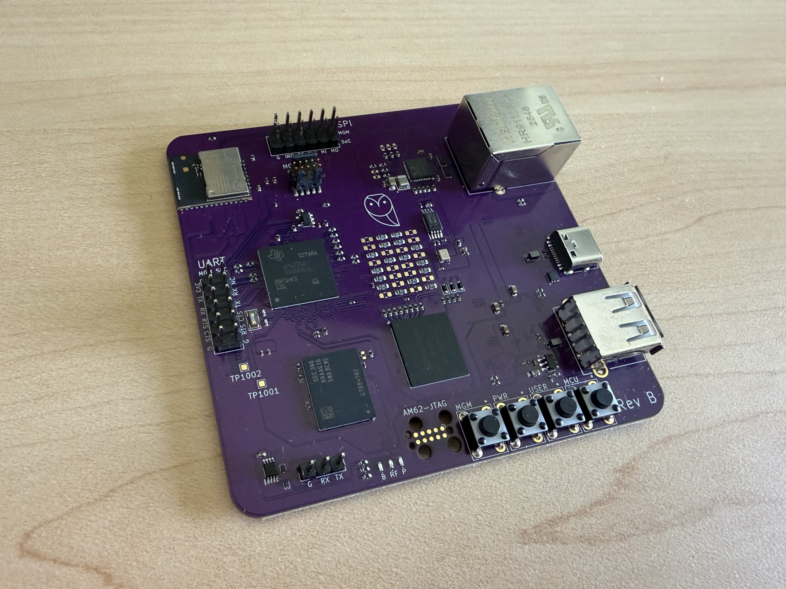

Multi Protocol Smart Home Embedded Linux Gateway - Leonhart

What it does
Leonhart is a custom embedded Linux board capable of hosting local Zigbee and Thread networks, and interacting with smart devices on those networks through Matter commands. This allows for local control of devices, no proprietary walls, and legacy Zigbee devices to remain useful
What I did
Designed the schematic and PCB from scratch, including DDR4, RGMII Ethernet, power sequencing, eMMC, USB, and radio interfaces.
Rev A successfully booted Linux but exposed power, Ethernet, and radio pinout issues. I debugged those failures and designed Rev B, which boots Linux directly from eMMC with working Gigabit Ethernet, SSH, and MGM240P communication.